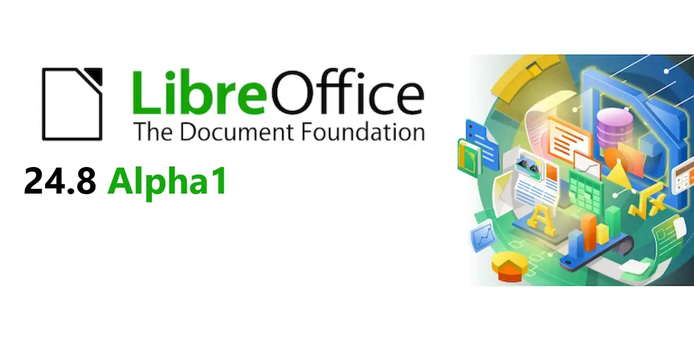
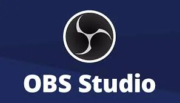
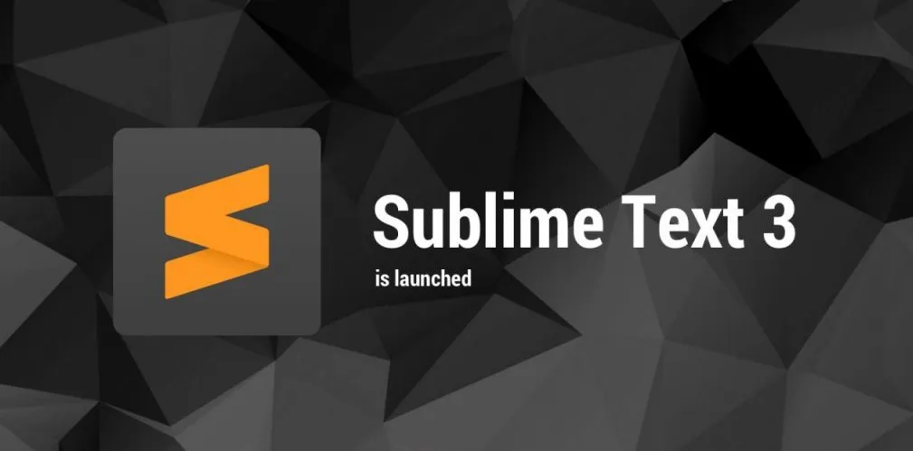
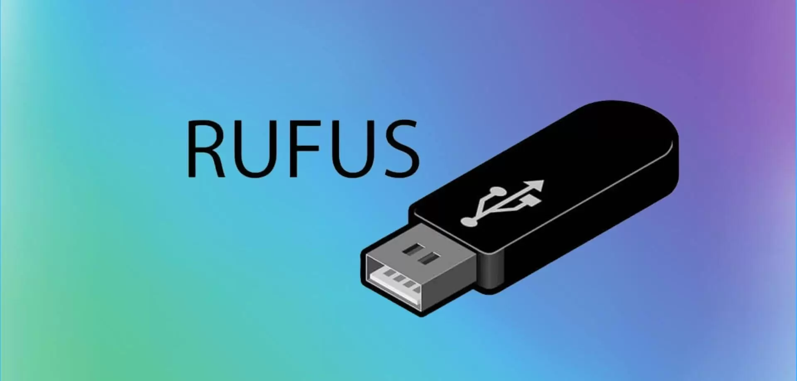
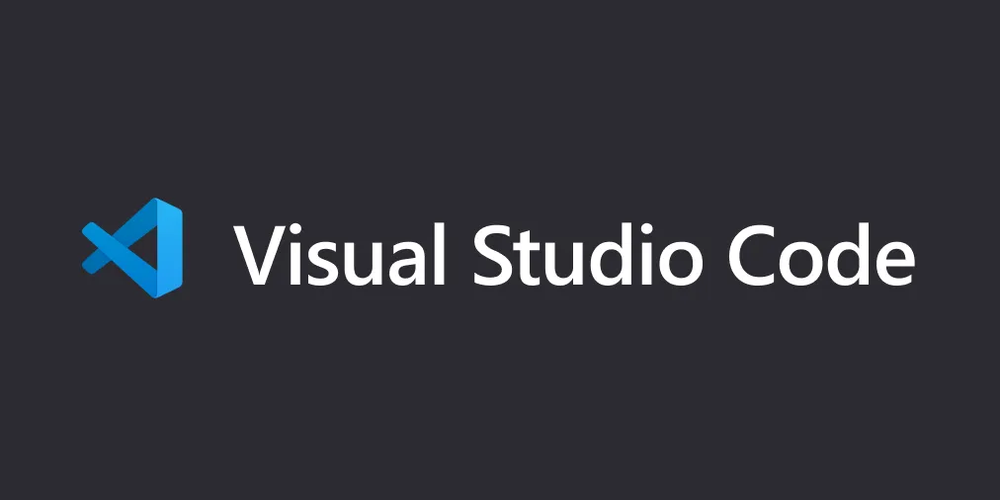
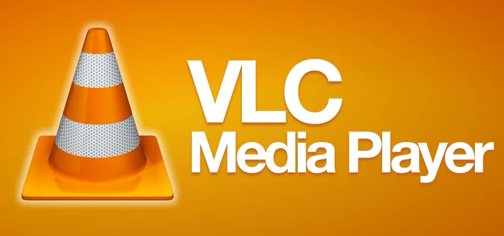
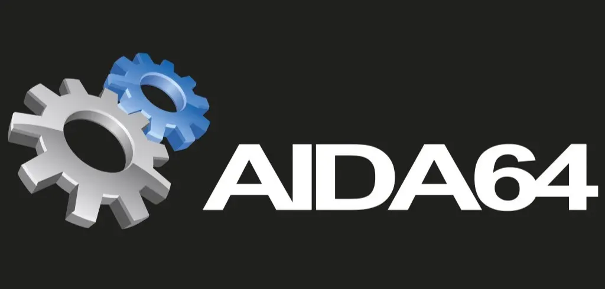
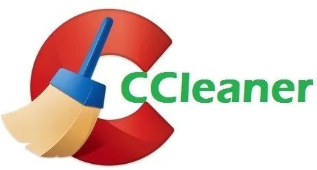
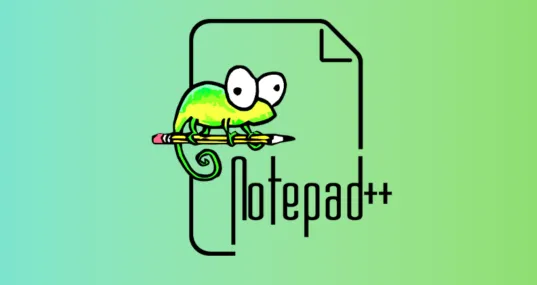

Olá, me chamo Hânison e sou o responsavel pela equipe da
DevTech Brasil
Nossa página tem como objetivo trazer para você a facilidade de ter todos os programas que você precisa reunidos em um lugar só.
Aqui você poderá encontrar seus programas favoritos e solicitar inclusão de programas que você não encontrou aqui.
Foi pensando em você, que nossa equipe separou o suprasumo dos programas e colocou ao alcance de suas mãos.
INSTRUÇÕES
Todos os programas disponibilizados pela equipe está na guia DOWNLOADS.
As informações referentes a nossas redes sociais e sobre cada membro da equipe esta´ra disponivel na guia SOBRE.
Para sugestões e solicitações de inclusão de programas e qualquer outro tipo de feedback, acesse a guia CONTATO.
DOWNLOADS

O LibreOffice é uma suíte de produtividade gratuita e de código aberto, que inclui aplicativos como Writer, Calc e Impress, oferecendo uma alternativa robusta ao Microsoft Office para criar e editar documentos, planilhas e apresentações.

O OBS Studio é um software gratuito e de código aberto para gravação de vídeo e transmissão ao vivo. Ele permite capturar e misturar vídeo e áudio em tempo real, sendo amplamente utilizado por criadores de conteúdo, streamers e profissionais de mídia.

O Sublime Text é um editor de texto sofisticado para código, marcação e prosa. Ele é conhecido por sua interface amigável, velocidade e recursos avançados, como múltiplas seleções, paleta de comandos e suporte a diversos plugins, tornando-o uma ferramenta favorita entre desenvolvedores e escritores.

O Rufus é um utilitário gratuito e de código aberto usado para formatar e criar unidades USB inicializáveis. Ele é especialmente útil para criar mídias de instalação de sistemas operacionais, como Windows e Linux, de maneira rápida e eficiente.

O Visual Studio Code (VSCode) é um editor de código-fonte gratuito e de código aberto, desenvolvido pela Microsoft. Ele é altamente personalizável, com suporte a extensões, depuração integrada, controle de versão Git e uma ampla gama de linguagens de programação, tornando-o uma escolha popular entre desenvolvedores.

O VLC Media Player é um reprodutor de mídia gratuito e de código aberto, conhecido por sua capacidade de reproduzir uma ampla variedade de formatos de áudio e vídeo. Ele oferece suporte a streaming, legendas e uma interface personalizável, sendo uma escolha popular para usuários que buscam um player versátil e confiável.

O AIDA64 é uma ferramenta de diagnóstico e benchmarking para Windows. Ele oferece informações detalhadas sobre o hardware e software do sistema, além de testes de desempenho para avaliar a eficiência do computador. É amplamente utilizado por entusiastas de tecnologia e profissionais de TI para monitoramento e análise de sistemas.

O CCleaner é um utilitário gratuito para otimização de sistemas e limpeza de arquivos desnecessários. Ele remove arquivos temporários, limpa o registro do Windows e gerencia programas de inicialização, ajudando a melhorar o desempenho e a estabilidade do computador. É amplamente utilizado para manutenção preventiva e recuperação de espaço em disco.

O Notepad++ é um editor de texto gratuito e de código aberto, ideal para programação e edição de texto. Ele suporta várias linguagens de programação, oferece recursos como destaque de sintaxe, autocompletar e edição em abas, tornando-o uma ferramenta poderosa e versátil para desenvolvedores e escritores.
SOBRE
Olá, meu nome é Hânison Reis, tenho 38 anos e estou atualmente cursando o primeiro semestre de Engenharia de Software.
Possuo conhecimentos intermediários em diversas linguagens de programação, o que me permite desenvolver soluções eficazes e inovadoras.
Além disso, tenho diversos certificados em softwares como Excel e Power BI, que complementam minhas habilidades técnicas e me ajudam a realizar análises de dados detalhadas e precisas.
Estou sempre em busca de novos desafios e oportunidades para aplicar e expandir meus conhecimentos..